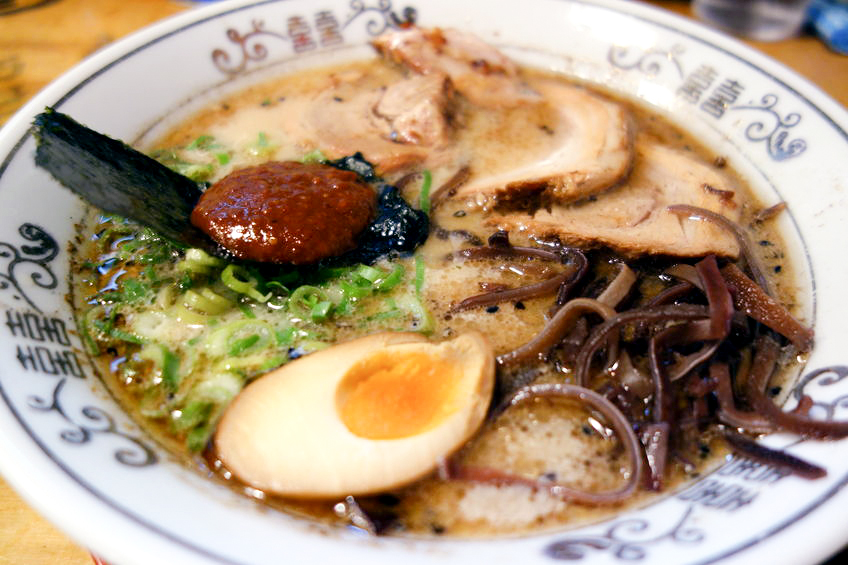

SAPPORO MISO RAMEN

Ramen near you
Sapporo, the capital of Japan’s northernmost prefecture of Hokkaido, is known as the birthplace of miso-style ramen. Miso ramen is so popular among locals, in fact, that the city has not one but two ramen “alleys”: Ganso Ramen Yokocho and Shin Ramen Yokocho. To make this local specialty, fragrant soybean paste is sauteed together with ginger and garlic and mixed together with pork broth for a hearty bowl of ramen that hits the spot on even the coldest winter days. Toppings include roasted chashu pork, bamboo shoots, and bean sprouts. You can also request to add corn and a creamy pat of butter, two local Hokkaido specialty products.